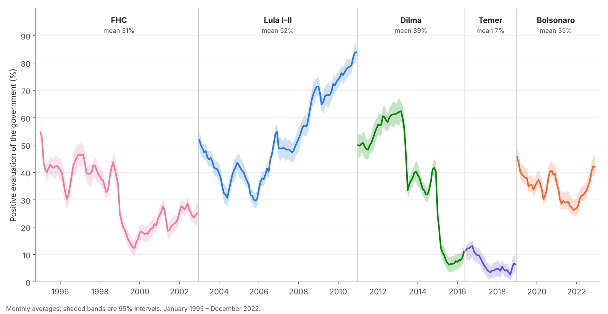

News
- 2026: “Global challenges for research on gun violence” (with Sandra Ley, Aisha Jafri, and Adnan Hyder) is out in The Lancet.
- 2026: New articles in Comparative Education Review, Journal of Elections, Public Opinion and Parties, Journal of Computational Social Science, and Tropical Medicine & International Health.
- 2025: Joined the editorial board of the Revista Latinoamericana de Opinión Pública.
- Since 2023: Co-Chair of the Lancet Commission on Global Gun Violence and Health.
Recent Publications
- Executive approval and accountability: the impact of global shocks in less developed democracies (with Natália de Paula Moreira). Journal of Elections, Public Opinion and Parties, vol. 36, no. 3, pp. 579-601. 2026. @article{barberia2026executive, title = {Executive approval and accountability: the impact of global shocks in less developed democracies}, author = {Barberia, Lorena G. and de Paula Moreira, Natália}, journal = {Journal of Elections, Public Opinion and Parties}, year = {2026}, volume = {36}, number = {3}, pages = {579--601}, doi = {10.1080/17457289.2025.2507100} }
- Federative Coordination and Inequality of Provision: Brazil’s Education Policy Response to the COVID-19 Pandemic (with Luiz G. Roth Cantarelli, Pedro Schmalz, and Ursula Dias Peres). Comparative Education Review, vol. 70, no. 1, pp. 170-193. 2026. @article{barberia2026federative, title = {Federative Coordination and Inequality of Provision: Brazil’s Education Policy Response to the COVID-19 Pandemic}, author = {Barberia, Lorena G. and Cantarelli, Luiz G. Roth and Schmalz, Pedro and Peres, Ursula Dias}, journal = {Comparative Education Review}, year = {2026}, volume = {70}, number = {1}, pages = {170--193}, doi = {10.1086/739193} }
- Sentiment and stance detection in COVID-19 vaccine discourse: a systematic review (with Belinda Lombard, Norton Trevisan Roman, and Tatiane C. M. Sousa). Journal of Computational Social Science, vol. 9, no. 3. 2026. @article{barberia2026sentiment,
title = {Sentiment and stance detection in COVID-19 vaccine discourse: a systematic review},
author = {Barberia, Lorena and Lombard, Belinda and Roman, Norton Trevisan and Sousa, Tatiane C. M.},
journal = {Journal of Computational Social Science},
year = {2026},
volume = {9},
number = {3},
doi = {10.1007/s42001-026-00482-3}
}
Abstract
Advances in machine learning have enhanced researchers’ ability to detect vaccine hesitancy on social media using Natural Language Processing. Our objective in this study was to evaluate, through a systematic review of studies that employed machine learning to analyze sentiment and stance regarding COVID-19 vaccines on Twitter in assessing their methodological quality and consistency. We searched for papers published between 1 January 2020 and 31 December 2023 in PubMed, Web of Science, and Scopus. The inclusion criteria were the use of supervised machine learning to assess COVID-19 vaccine hesitancy through stance detection or sentiment analysis on Twitter/X. We categorized the studies according to a taxonomy of five dimensions: tweet sample selection approach, self-reported study type, classification typology, annotation codebook definitions, and interpretation of results. We analyzed the risk of bias in the included studies, examining whether stance detection was used to report different hesitancy trends compared to those using sentiment analysis. We identified 51 papers that were published in 36 journals. Our review found that measurement bias is widely prevalent in studies employing supervised machine learning to analyze sentiment and stance toward COVID-19 vaccines and vaccination. The reporting errors are sufficiently serious to hinder the generalizability and interpretation of these studies, making it difficult to determine whether discursive content communicates reluctance to vaccinate against SARS-CoV-2. Our findings underscore the importance of more transparent reporting of NLP methods in vaccine discourse studies. Addressing methodological shortcomings is essential to improving our understanding of vaccine hesitancy on social media.
- Early Warning Systems and Emergency Declarations During Brazil's Largest Dengue Outbreak (with Alexandra Crispim Boing, Natália de Paula Moreira, et al.). Tropical Medicine & International Health, vol. 31, no. 9, pp. 1183-1193. 2026. @article{barberia2026early,
title = {Early Warning Systems and Emergency Declarations During Brazil's Largest Dengue Outbreak},
author = {Barberia, Lorena Guadalupe and Boing, Alexandra Crispim and de Paula Moreira, Natália and Motta, Murilo and Ferreira, Guilherme Pereira and Pinto, Dara Aparecida Vilela and Soares, Luiz Antonio Couto and de Oliveira Gusmão, João and Brito, Ana Paula Magalhães and Almeida, Sabrina and Moraes de Sousa, Tatiane C.},
journal = {Tropical Medicine & International Health},
year = {2026},
volume = {31},
number = {9},
pages = {1183--1193},
doi = {10.1111/tmi.70153}
}
Abstract
Early warning systems (EWSs) are essential for alert, detection, and response to potential public health emergencies. Brazil's 2024 dengue epidemic, the largest ever recorded, offers a critical case for assessing correspondence between timely epidemic risk detection and health governance responsiveness. We collected data on dengue cases, deaths, and public health emergency declarations (PHEDs) at federal, state, and municipal levels. We evaluated the timeliness of 2024 emergency declarations by retrospectively mapping observed risk levels across all states and capitals, utilizing the 2023 federal endemic channel guidelines and the updated 2025 risk‐level criteria. Using logistic regressions, we investigated whether epidemic severity was associated with the enactment of a PHED, accounting for primary health coverage and political dynamics that influence local government declarations. The 2024 epidemic escalated rapidly. Brazil remained at an alert level for 19 consecutive weeks and at an epidemic level for 11, with epidemic risk thresholds reached unusually early. Eleven states and seven capitals issued PHEDs after epidemic thresholds were reached, and an additional five capitals were covered by overlapping state declarations. Despite prolonged epidemic conditions across 18 states and 20 capitals, only 11 states and 7 capitals issued emergency declarations. High‐burden jurisdictions such as Bahia and Belém did not declare emergencies. Logistic regression models show that only the duration at elevated risk levels significantly predicted emergency declarations, while political factors and primary health care coverage did not. That declarations followed prolonged epidemic exposure rather than early detection underscores the need for institutional mechanisms that translate surveillance signals into timely governance responses. The EWS framework was insufficiently responsive to the rapid dynamics of the 2024 dengue epidemic. Strengthening responsive governance requires adaptive surveillance tools and institutional mechanisms that link early detection to timely, coordinated responses, while accounting for decentralized decision‐making and uneven subnational capacities.
- Global challenges for research on gun violence (with Sandra Ley, Aisha Jafri, and Adnan A Hyder). The Lancet, vol. 407, no. 10541, pp. 1766-1768. 2026. @article{ley2026global, title = {Global challenges for research on gun violence}, author = {Ley, Sandra and Barberia, Lorena and Jafri, Aisha and Hyder, Adnan A}, journal = {The Lancet}, year = {2026}, volume = {407}, number = {10541}, pages = {1766--1768}, doi = {10.1016/s0140-6736(26)00361-2} }
Peer-Reviewed Publications & Commentary
Grouped by theme, newest first. Titles link to the published version (DOI). The full list is in my CV.
Public Opinion, Elections & Democracy
- Executive approval and accountability: the impact of global shocks in less developed democracies (with Natália de Paula Moreira). Journal of Elections, Public Opinion and Parties, vol. 36, no. 3, pp. 579-601. 2026. @article{barberia2026executive, title = {Executive approval and accountability: the impact of global shocks in less developed democracies}, author = {Barberia, Lorena G. and de Paula Moreira, Natália}, journal = {Journal of Elections, Public Opinion and Parties}, year = {2026}, volume = {36}, number = {3}, pages = {579--601}, doi = {10.1080/17457289.2025.2507100} }
- The Cycle Continues: An Assessment of Democratic Transitions in Latin America with New Data and Indicators (with Kelly Senters Piazza and George Avelino Filho). Journal of Politics in Latin America, vol. 17, no. 2, pp. 157-186. 2025. @article{barberia2025the,
title = {The Cycle Continues: An Assessment of Democratic Transitions in Latin America with New Data and Indicators},
author = {Barberia, Lorena G and Piazza, Kelly Senters and Avelino Filho, George},
journal = {Journal of Politics in Latin America},
year = {2025},
volume = {17},
number = {2},
pages = {157--186},
doi = {10.1177/1866802x241306119}
}
Abstract
This study examines how theoretically driven indicators modify our understanding of transition dynamics in Latin America. Our indicators show that a noticeable wave of reversion to authoritarian rule in Latin America occurred during the last two decades. Moreover, unlike the past, where authoritarian regimes were established with military coups, the Democracy-Dictatorship Reprise for Latin America (DDRLA) confirms that the region's recent experience with democratic reversion has been brought about by presidents who secured office through elections and who manipulated rules to remain in office for more than two terms. For the period from 1946 to 2022, we discuss how the minimalist conception of democratic regimes can be further advanced with our reformed political regime indicator, as well as measures of initial elections and political regime transitions. We then demonstrate the utility of the DDRLA by replicating studies recently published in leading journals.
- Regimes of Truth: Disinformation and Conflicting On- and Offline Realities (with Natália de Paula Moreira and Isabel Seelaender Costa Rosa). The Faces of Authoritarianism and Strategies of Dissent in Contemporary Brazil (UCL Press), pp. 107-126. 2025. @incollection{barberia2025regimes, title = {Regimes of Truth: Disinformation and Conflicting On- and Offline Realities}, author = {Barberia, Lorena G. and de Paula Moreira, Natália and Rosa, Isabel Seelaender Costa}, booktitle = {The Faces of Authoritarianism and Strategies of Dissent in Contemporary Brazil (UCL Press)}, year = {2025}, pages = {107--126}, doi = {10.2307/jj.22021785.12} }
- The Relationship between Ideology and COVID-19 Deaths: What We Know and What We Still Need to Know (with Natália de Paula Moreira, Rebeca de Jesus Carvalho, Maria Leticia Claro Oliveira, Isabel Seelaender Costa Rosa, and Marcela Zamudio). Brazilian Political Science Review, vol. 16, no. 3. 2022. @article{barberia2022the, title = {The Relationship between Ideology and COVID-19 Deaths: What We Know and What We Still Need to Know}, author = {Barberia, Lorena and Moreira, Natália de Paula and Carvalho, Rebeca de Jesus and Oliveira, Maria Leticia Claro and Rosa, Isabel Seelaender Costa and Zamudio, Marcela}, journal = {Brazilian Political Science Review}, year = {2022}, volume = {16}, number = {3}, doi = {10.1590/1981-3821202200030001} }
- Economic Voting in Brazil’s Gubernatorial Elections, 1994–2014 (with George Avelino and Gabriel Zanlorenssi). Publius: The Journal of Federalism, vol. 49, no. 2, pp. 250-270. 2018. @article{barberia2018economic, title = {Economic Voting in Brazil’s Gubernatorial Elections, 1994–2014}, author = {Barberia, Lorena and Avelino, George and Zanlorenssi, Gabriel}, journal = {Publius: The Journal of Federalism}, year = {2018}, volume = {49}, number = {2}, pages = {250--270}, doi = {10.1093/publius/pjy017} }
- Do Political Budget Cycles Differ in Latin American Democracies? (with George Avelino). Economía, vol. 11, no. 2, pp. 101-134. 2011. @article{barberia2011do, title = {Do Political Budget Cycles Differ in Latin American Democracies?}, author = {Barberia, Lorena G. and Avelino, George}, journal = {Economía}, year = {2011}, volume = {11}, number = {2}, pages = {101--134}, doi = {10.1353/eco.2011.0001} }
Health Policy & the Politics of COVID-19
- Prevalence of SARS-CoV-2 Infection Among Vulnerable Populations Relying on Public Health Services: Findings from the AVISA Study in Brazil (with Eliana Nogueira Castro de Barros, Manuela de Almeida Roediger, Ricardo Queiroz Gurgel, Marco Antonio de Oliveira, and Victor Santana Santos). Revista da Sociedade Brasileira de Medicina Tropical, vol. 59. 2026. @article{barros2026prevalence,
title = {Prevalence of SARS-CoV-2 Infection Among Vulnerable Populations Relying on Public Health Services: Findings from the AVISA Study in Brazil},
author = {Barros, Eliana Nogueira Castro de and Roediger, Manuela de Almeida and Gurgel, Ricardo Queiroz and Oliveira, Marco Antonio de and Santos, Victor Santana and Barberia, Lorena Guadalupe},
journal = {Revista da Sociedade Brasileira de Medicina Tropical},
year = {2026},
volume = {59},
doi = {10.1590/0037-8682-0151-2025}
}
Abstract
Background: Understanding SARS-CoV-2 seroprevalence among vulnerable populations is crucial, especially in countries with universal but resource-constrained healthcare systems, such as Brazil. Methods: This was a cross-sectional, population-based household survey within the AVISA study, which aimed to assess seroprevalence among households enrolled in the Family Health Program (ESF). Two serological assays (rapid test and ECLIA) were used to detect anti-SARS-CoV-2 antibodies. Descriptive statistics were calculated and survey-adjusted Poisson regression models with robust variance were estimated, yielding prevalence ratios (PRs) and 95% confidence intervals (CIs). Results: The overall weighted seroprevalence was 35.66% (95% CI: 30.55-40.77) in 2,986 participants. Compared with individuals in the Southeast region, participants in the Northeast and North regions had a 1.48- and 1.38-times higher prevalence of SARS-CoV-2 testing positivity, respectively. Relative to individuals who self-identified as having Black or Brown skin color using IBGE-defined categories, White had a 22% lower prevalence of seropositivity (PR = 0.78, 95% CI 0.63-0.97). Compared to those living in households with four to five family members, individuals living in households with six or more family members had a higher prevalence of seropositivity (PR = 1.34, 95% CI 1.05-1.71). Individuals in the lowest per capita household income quintile were more likely to have SARS-CoV-2 infection (PR = 1.89, 95% CI 1.21-2.95) than those in the highest. Conclusion: This study is the first to assess SARS-CoV-2 seroprevalence among ESF participants, a socioeconomically vulnerable population, served by the primary care public health system. Lower socioeconomic status was associated with higher seroprevalence.
- Early Warning Systems and Emergency Declarations During Brazil's Largest Dengue Outbreak (with Alexandra Crispim Boing, Natália de Paula Moreira, et al.). Tropical Medicine & International Health, vol. 31, no. 9, pp. 1183-1193. 2026. @article{barberia2026early,
title = {Early Warning Systems and Emergency Declarations During Brazil's Largest Dengue Outbreak},
author = {Barberia, Lorena Guadalupe and Boing, Alexandra Crispim and de Paula Moreira, Natália and Motta, Murilo and Ferreira, Guilherme Pereira and Pinto, Dara Aparecida Vilela and Soares, Luiz Antonio Couto and de Oliveira Gusmão, João and Brito, Ana Paula Magalhães and Almeida, Sabrina and Moraes de Sousa, Tatiane C.},
journal = {Tropical Medicine & International Health},
year = {2026},
volume = {31},
number = {9},
pages = {1183--1193},
doi = {10.1111/tmi.70153}
}
Abstract
Early warning systems (EWSs) are essential for alert, detection, and response to potential public health emergencies. Brazil's 2024 dengue epidemic, the largest ever recorded, offers a critical case for assessing correspondence between timely epidemic risk detection and health governance responsiveness. We collected data on dengue cases, deaths, and public health emergency declarations (PHEDs) at federal, state, and municipal levels. We evaluated the timeliness of 2024 emergency declarations by retrospectively mapping observed risk levels across all states and capitals, utilizing the 2023 federal endemic channel guidelines and the updated 2025 risk‐level criteria. Using logistic regressions, we investigated whether epidemic severity was associated with the enactment of a PHED, accounting for primary health coverage and political dynamics that influence local government declarations. The 2024 epidemic escalated rapidly. Brazil remained at an alert level for 19 consecutive weeks and at an epidemic level for 11, with epidemic risk thresholds reached unusually early. Eleven states and seven capitals issued PHEDs after epidemic thresholds were reached, and an additional five capitals were covered by overlapping state declarations. Despite prolonged epidemic conditions across 18 states and 20 capitals, only 11 states and 7 capitals issued emergency declarations. High‐burden jurisdictions such as Bahia and Belém did not declare emergencies. Logistic regression models show that only the duration at elevated risk levels significantly predicted emergency declarations, while political factors and primary health care coverage did not. That declarations followed prolonged epidemic exposure rather than early detection underscores the need for institutional mechanisms that translate surveillance signals into timely governance responses. The EWS framework was insufficiently responsive to the rapid dynamics of the 2024 dengue epidemic. Strengthening responsive governance requires adaptive surveillance tools and institutional mechanisms that link early detection to timely, coordinated responses, while accounting for decentralized decision‐making and uneven subnational capacities.
- Implementing a multi-centric cohort study during the SARS-CoV-2 pandemic in a resource-constrained setting: challenges, adaptive solutions, and lessons from Brazil (with Manuela de Almeida Roediger, Ricardo Queiroz Gurgel, et al.). Archives of Public Health, vol. 84, no. 1. 2026. @article{barberia2026implementing, title = {Implementing a multi-centric cohort study during the SARS-CoV-2 pandemic in a resource-constrained setting: challenges, adaptive solutions, and lessons from Brazil}, author = {Barberia, Lorena Guadalupe and de Almeida Roediger, Manuela and Gurgel, Ricardo Queiroz and Santos, Victor Santana and de Carvalho Borges, Marcos and Romero, Gustavo Adolfo Sierra and da Fonseca, Allex Jardim and Teixeira, Mauro Martins and Nogueira, Mauricio Lacerda and Fontes, Cor Jesus Fernandes and Coelho, Ivo Castelo Branco and Pereira, Dhelio Batista and de Siqueira, André Machado and Silveira, Daniela Haydee Ramos and Patiño, Elizabeth González and Conde, Mônica Tilli Reis Pessoa and Escuder, Maria Mercedes and Alves, Maria Cecilia Goi Porto and de Barros, Eliana Nogueira Castro}, journal = {Archives of Public Health}, year = {2026}, volume = {84}, number = {1}, doi = {10.1186/s13690-026-01870-x} }
- Regional and national estimates of children affected by all-cause and COVID-19-associated orphanhood and caregiver death in Brazil, by age and family circumstance: a modeling study (with Nicholas Steyn, H. Juliette T. Unwin, et al.). The Lancet Regional Health - Americas, vol. 51, 101252. 2025. @article{steyn2025regional, title = {Regional and national estimates of children affected by all-cause and COVID-19-associated orphanhood and caregiver death in Brazil, by age and family circumstance: a modeling study}, author = {Steyn, Nicholas and Unwin, H. Juliette T. and Ponmattam, Jamie and Villaveces, Andrés and Martins, Luiza and Sherr, Lorraine and Blenkinsop, Alexandra and Semenova, Elizaveta and Stuart-Brown, Alice and Ribeiro Amaral, André Victor and Ratmann, Oliver and Schnekenberg, Ricardo Parolin and Cluver, Lucie and Hillis, Susan and Rawlings, Laura and Barberia, Lorena and Souza, Andrea Santos and Castro, Marcia C. and Flaxman, Seth}, journal = {The Lancet Regional Health - Americas}, year = {2025}, volume = {51}, pages = {101252}, doi = {10.1016/j.lana.2025.101252} }
- Caregivers' attitudes toward school-based vaccination programs: A comparison of COVID-19, HPV, influenza, and dengue vaccines in Brazil (with Isabel Costa Rosa Seelaender, Rebeca de J. Carvalho, et al.). Vaccine, vol. 64, 127709. 2025. @article{barberia2025caregivers, title = {Caregivers' attitudes toward school-based vaccination programs: A comparison of COVID-19, HPV, influenza, and dengue vaccines in Brazil}, author = {Barberia, Lorena G. and Seelaender, Isabel Costa Rosa and Carvalho, Rebeca de J. and de Moraes, Jose Cassio and de Paula Moreira, Natália and de Toledo Vieira, Marcel and Pinto, Dara Aparecida Vilela and Moraes de Sousa, Tatiane C.}, journal = {Vaccine}, year = {2025}, volume = {64}, pages = {127709}, doi = {10.1016/j.vaccine.2025.127709} }
- “The (Re)-emerging And ePidemic Infectious Diseases (RAPID) Stigma Scales: A cross-outbreak scale development and psychometric validation study” (with A. Paterson, K. K. Mughogho, A. Cheyne, et al.). The Lancet Infectious Diseases, vol. 25, no. 11, pp. e635-e644. 2025. @article{paterson2025the, title = {The (Re)-emerging And ePidemic Infectious Diseases (RAPID) Stigma Scales: A cross-outbreak scale development and psychometric validation study}, author = {Paterson, A. and Mughogho, K. K. and Cheyne, A. and Kabajaasi, O. and Sarkar, T. and Dimitrios, K. H. and Barberia, Lorena G. and others}, journal = {The Lancet Infectious Diseases}, year = {2025}, volume = {25}, number = {11}, pages = {e635--e644} }
- The influence of political disagreements and corruption on state health leader turnover during the COVID-19 pandemic in Brazil (with Gilmar Masiero, Iana Alves de Lima, Luciana Santana, and Tatiane C. Moraes de Sousa). Leadership in Health Services, vol. 37, no. 4, pp. 511-525. 2024. @article{barberia2024the,
title = {The influence of political disagreements and corruption on state health leader turnover during the COVID-19 pandemic in Brazil},
author = {Barberia, Lorena G. and Masiero, Gilmar and Alves de Lima, Iana and Santana, Luciana and Moraes de Sousa, Tatiane C.},
journal = {Leadership in Health Services},
year = {2024},
volume = {37},
number = {4},
pages = {511--525},
doi = {10.1108/lhs-01-2024-0008}
}
Abstract
Purpose Governments faced formidable challenges in coordinating public health responses to the COVID-19 pandemic. This study aims to enhance the understanding of effective organizational leadership during crises by investigating the factors influencing the turnover of health leaders during the COVID-19 pandemic in Brazil. Design/methodology/approach Using primary data encompassing all appointments and dismissals of federal and state health secretaries, this paper conducted a quantitative analysis of the relational and reputational factors that contributed to leader turnover during the COVID-19 pandemic. This paper also examined whether leaders’ management and public health experience increase the duration of tenure. Findings States encountered significant challenges in retaining experienced and effective leadership during the health emergency, primarily due to political conflicts in policymaking and, to a lesser extent, allegations of corruption. Furthermore, leaders with expertise in public health were found to be less likely to be removed from office. However, managerial experience did not prolong the tenure of state health secretaries during the emergency. Research limitations/implications Since most health leaders have public health and management experience, the contributions of each factor to the duration of a secretary’s tenure are difficult to separate and analyze separately. Practical implications This study provides empirical insights into what factors drive health leader turnover during major health emergencies. Social implications During major health emergencies, health leaders often strongly disagree with elected officials on the response. This paper test how crisis leadership theories help explain state health leaders’ duration in one of the world’s largest public health systems during the COVID-19 pandemic. This paper find that policy disagreements contributed to significant turnover. Originality/value To the best of the authors’ knowledge, this paper is the first that are aware of that uses novel primary data on public health executive leader characteristics and turnover causes in the context of the COVID-19 pandemic. It provides empirical evidence contributing to the crisis leadership literature by examining health leader turnover in one of the world’s largest public health systems.
- Spatial clusters and social inequities in COVID-19 vaccine coverage among children in Brazil (with Alexandra Crispim Boing, Antonio Fernando Boing, Marcelo Eduardo Borges, Denis de Oliveira Rodrigues, and SV Subramanian). Ciência & Saúde Coletiva, vol. 29, no. 8. 2024. @article{boing2024spatial,
title = {Spatial clusters and social inequities in COVID-19 vaccine coverage among children in Brazil},
author = {Boing, Alexandra Crispim and Boing, Antonio Fernando and Borges, Marcelo Eduardo and Rodrigues, Denis de Oliveira and Barberia, Lorena and Subramanian, SV},
journal = {Ciência & Saúde Coletiva},
year = {2024},
volume = {29},
number = {8},
doi = {10.1590/1413-81232024298.03952023}
}
Abstract
This study examined the spatial distribution and social inequalities in COVID-19 vaccine coverage among children aged 5-11 in Brazil. First and second dose vaccine coverage was calculated for all Brazilian municipalities and analyzed by geographic region and deciles based on human development index (HDI-M) and expected years of schooling at 18 years of age. Multilevel models were used to determine the variance partition coefficient, and bivariate local Moran’s I statistic was used to assess spatial association. Results showed significant differences in vaccine coverage rates among Brazilian municipalities, with lower coverage in the North and Midwest regions. Municipalities with lower HDI and expected years of schooling had consistently lower vaccine coverage rates. Bivariate clustering analysis identified extensive concentrations of municipalities in the Northern and Northeastern regions with low vaccine coverage and low human development, while some clusters of municipalities in the Southeast and South regions with low coverage were located in areas with high HDI-M. These findings highlight the persistent municipal-level inequalities in vaccine coverage among children in Brazil and the need for targeted interventions to improve vaccine access and coverage in underserved areas.
- The impact of COVID-19 childhood and adolescent vaccination on mortality in Argentina (with Rodrigo Quiroga, Sofía Gastellu, et al.). Vaccine, vol. 42, no. 22, 126037. 2024. @article{quiroga2024the, title = {The impact of COVID-19 childhood and adolescent vaccination on mortality in Argentina}, author = {Quiroga, Rodrigo and Gastellu, Sofía and Fernández, Braian and Ottaviani, Romina and Zuccoli, Johanna Romina and Vallecorsa, Pablo Daniel and Aliaga, Jorge and Barberia, Lorena}, journal = {Vaccine}, year = {2024}, volume = {42}, number = {22}, pages = {126037}, doi = {10.1016/j.vaccine.2024.06.005} }
- The Brazilian vaccine divide: How some municipalities were left behind in the Covid-19 vaccine coverage (with Antonio Fernando Boing, Alexandra Crispim Boing, Marcelo Eduardo Borges, and Sankaran Venkata Subramanian). PLOS Global Public Health, vol. 3, no. 11, e0002493. 2023. @article{boing2023the,
title = {The Brazilian vaccine divide: How some municipalities were left behind in the Covid-19 vaccine coverage},
author = {Boing, Antonio Fernando and Boing, Alexandra Crispim and Barberia, Lorena and Borges, Marcelo Eduardo and Subramanian, Sankaran Venkata},
journal = {PLOS Global Public Health},
year = {2023},
volume = {3},
number = {11},
pages = {e0002493},
doi = {10.1371/journal.pgph.0002493}
}
Abstract
This study aims to assess the progress of geographic, socioeconomic, and demographic disparities in Covid-19 vaccination coverage in Brazil over the first two years of the vaccination campaign. Data from the National Immunization Program Information System were used to estimate covid-19 vaccine coverage. Brazilian municipalities were divided into two groups based on their vaccine coverage for the booster dose. The first group comprised 20% of municipalities with the lowest coverage, while the second group (80% of municipalities) had higher coverage. The analysis was conducted separately for four age groups: 5–11, 12–17, 18–59, and 60+. Explanatory variables included socioeconomic and health services indicators. Crude and adjusted logistic regression models were used to estimate the probability of a municipality being among those with the worst vaccination coverage according to the categories of exploratory variables. Between January/2021 and December/2022, Brazil administered 448.2 million doses of the covid-19 vaccine. The booster vaccination coverage varied from 24.8% among adolescents to 79.7% among the elderly. The difference between the group with the highest and lowest coverage increased during the national vaccination campaign. Municipalities with lower education levels, higher proportion of Black population, higher Gini index, and worse health service indicators had a greater likelihood of having lower vaccination coverage. High and increasing levels of inequality in Covid-19 vaccination were observed in Brazil across all age groups during the vaccination campaign in 2021–2022.
- Uncovering inequities in Covid-19 vaccine coverage for adults and elderly in Brazil: A multilevel study of 2021–2022 data (with Antonio Fernando Boing, Alexandra Crispim Boing, Marcelo Eduardo Borges, and S.V. Subramanian). Vaccine, vol. 41, no. 26, pp. 3937-3945. 2023. @article{boing2023uncovering, title = {Uncovering inequities in Covid-19 vaccine coverage for adults and elderly in Brazil: A multilevel study of 2021–2022 data}, author = {Boing, Antonio Fernando and Boing, Alexandra Crispim and Barberia, Lorena and Borges, Marcelo Eduardo and Subramanian, S.V.}, journal = {Vaccine}, year = {2023}, volume = {41}, number = {26}, pages = {3937--3945}, doi = {10.1016/j.vaccine.2023.05.030} }
- An assessment of the public health surveillance strategy based on molecular testing during three major pandemic waves of COVID-19 in Brazil (with Alexandra Boing, João Gusmão, et al.). PLOS Global Public Health, vol. 3, no. 8, e0002164. 2023. @article{barberia2023an,
title = {An assessment of the public health surveillance strategy based on molecular testing during three major pandemic waves of COVID-19 in Brazil},
author = {Barberia, Lorena G. and Boing, Alexandra and Gusmão, João and Miyajima, Fabio and Abud, Adriano and Kemp, Brigina and Zamudio, Marcela and Moraes de Sousa, Tatiane C.},
journal = {PLOS Global Public Health},
year = {2023},
volume = {3},
number = {8},
pages = {e0002164},
doi = {10.1371/journal.pgph.0002164}
}
Abstract
A national laboratory-based surveillance system was adapted to monitor the situation of SARS-CoV-2 in Brazil. The objective of the study was to compare the challenges in implementing COVID-19 surveillance strategies based on the Ministry of Health’s (MoH) distribution of RT-PCR tests to different types of laboratories. This retrospective study analyzed the MoH’s testing policies and distribution of RT-PCR tests to laboratories during the first, second, and third waves. Recipient laboratories were divided into groups: public health laboratories that belonged to the national network of public health laboratories (Group 1); public laboratories granted authorization during the pandemic (Group 2); and High-Capacity Testing Centers (Group 3). We analyzed the timing and duration of COVID-19 testing policies and the allocation of tests to laboratories by group and wave. Using t-tests, we analyzed the difference in the weekly average of tests distributed to labs by group and using Pearson’s correlation coefficient, analyzed the test distribution according to infection and death rates. Between epiweek 9, 2020, and epiweek 22, 2022, the MoH distributed an average of 263,004 RT-PCR tests per week. The weekly average of tests distributed was highest in the second wave (310,327 tests), followed by the first (218,005 tests) and third waves (201,226 tests). There was a significant increase in the mean weekly tests distributed in the second wave compared to the first and third waves (p = 0.047; IC 8.29–1110.71). We found a significant difference between the weekly average of tests distributed in the first and second wave (p < 0.001; IC -209.83–76.20) to Group 2. Group 3 received the second-highest number of tests from the MoH overall, with a reduction during the third wave to first-wave levels. The distribution of RT-PCR tests was not correlated with the case and death incidence.
- Early response to COVID-19 in Brazil: The impact of a targeted approach to suspected cases and on epidemiological surveillance efforts (with Ana Freitas Ribeiro, Marcia C. Castro, Gabriela Lotta, Rebeca de J. Carvalho, and Marcela Zamudio). IJID Regions, vol. 7, pp. 242-251. 2023. @article{ribeiro2023early, title = {Early response to COVID-19 in Brazil: The impact of a targeted approach to suspected cases and on epidemiological surveillance efforts}, author = {Ribeiro, Ana Freitas and Castro, Marcia C. and Lotta, Gabriela and Carvalho, Rebeca de J. and Zamudio, Marcela and Barberia, Lorena G.}, journal = {IJID Regions}, year = {2023}, volume = {7}, pages = {242--251}, doi = {10.1016/j.ijregi.2023.04.011} }
- Evaluation of the effectiveness of surveillance policies to control the COVID-19 pandemic in São Paulo, Brazil (with Natália de P. Moreira, Brigina Kemp, et al.). Global Health Research and Policy, vol. 7, no. 1. 2022. @article{barberia2022evaluation,
title = {Evaluation of the effectiveness of surveillance policies to control the COVID-19 pandemic in São Paulo, Brazil},
author = {Barberia, Lorena G. and de P. Moreira, Natália and Kemp, Brigina and de Sousa Mascena Veras, Maria Amelia and Zamudio, Marcela and Rosa, Isabel Seelaender Costa and de J. Carvalho, Rebeca and Sousa, Tatiane C. M.},
journal = {Global Health Research and Policy},
year = {2022},
volume = {7},
number = {1},
doi = {10.1186/s41256-022-00260-4}
}
Abstract
Surveillance efforts are essential to pandemic control, especially where the state is the primary health provider, such as Brazil. When public health testing guidelines limit molecular tests, there are reductions in detection efforts aimed at early recognition, isolation, and treatment of those infected with the virus. This study evaluates the effectiveness of surveillance policies to control the COVID-19 pandemic in São Paulo. We conducted an interrupted time series analysis with a segmented regression model to analyze if changes in the state’s guidelines improved RT-PCR testing outcomes in Brazil’s most affluent and largest state, São Paulo. Anonymized daily data on the RT-PCR tests conducted in public laboratories belonging to the state-wide network from March 1, 2020 to June 5, 2021 were extracted from the Sao Paulo State open-source database, while the data on the genomic sequences were obtained from GISAID. We then aggregated these data for the 17 regional health departments in the state to evaluate regional-level outcomes. The public health system restricted RT-PCR testing to hospitalized cases in the first months. Testing was expanded to permit symptomatic testing of non-hospitalized persons only in July 2020, but a statistically significant increase in surveillance efforts was not observed. Case definition was expanded to allow case confirmation based on clinical, laboratory and image data criteria other than an RT-PCR test without increasing the testing effort for asymptomatic suspicious cases in September 2020. There was an increase in the mean volume of testing in each RHD, but the test positivity rate increased due to insufficient testing expansion. Results also show an uneven improvement in testing outcomes following these changes across the state’s regional health departments. Evidence suggests that lower RT-PCR testing and genomic surveillance efforts are associated with areas characterized by a higher population concentration and a greater population reliance on the public health system. Our results highlight the need to structure health surveillance and information systems for disease control and prevention in emergency settings considering local demographics and vulnerabilities. In high prevalence settings, efforts at identifying and including vulnerable populations in routine and enhanced surveillance programs during COVID-19 must be significantly improved.
- The political science of Covid‐19: An introduction (with Thomas Plümper and Guy D. Whitten). Social Science Quarterly, vol. 102, no. 5, pp. 2045-2054. 2021. @article{barberia2021the,
title = {The political science of Covid‐19: An introduction},
author = {Barberia, Lorena and Plümper, Thomas and Whitten, Guy D.},
journal = {Social Science Quarterly},
year = {2021},
volume = {102},
number = {5},
pages = {2045--2054},
doi = {10.1111/ssqu.13069}
}
Abstract
Political decisions, constellations, and behaviors exert a large influence of the dynamics of the severe acute respiratory syndrome coronavirus 2 (Sars‐CoV‐2) pandemic. Politics influences the choice of containment policies and the compliance with these policies—and therefore ultimately the epidemiological situation in each country, state, district, or even neighborhood. This introduction puts the articles collected in this special issue into the broader perspective of the social science literature on Covid‐19.
- Should I stay or should I go? Embracing causal heterogeneity in the study of pandemic policy and citizen behavior (with Maria Leticia Claro Oliveira, Andrea Junqueira, Natália de Paula Moreira, and Guy D. Whitten). Social Science Quarterly, vol. 102, no. 5, pp. 2055-2069. 2021. @article{barberia2021should,
title = {Should I stay or should I go? Embracing causal heterogeneity in the study of pandemic policy and citizen behavior},
author = {Barberia, Lorena G and Claro Oliveira, Maria Leticia and Junqueira, Andrea and Moreira, Natália de Paula and Whitten, Guy D.},
journal = {Social Science Quarterly},
year = {2021},
volume = {102},
number = {5},
pages = {2055--2069},
doi = {10.1111/ssqu.13037}
}
Abstract
To test for multicausality between government policy, health outcomes, economic performance, and citizen behavior during the COVID‐19 global pandemic. We perform Granger‐causality tests to explore the interrelationship between four endogenous variables, social distancing policy, home isolation, balance rate, and average weekly COVID‐19 deaths, in the 26 states of Brazil. As exogenous variables, we included a linear time trend and a dummy for the week in which the World Health Organization (WHO) declared COVID‐19 a global pandemic. Our analysis of Granger causal ordering between the four variables demonstrates that there is significant heterogeneity across the Brazilian federation. These findings can be interpreted as underscoring that there is no common model applicable to all states, and that the dynamics are context‐dependent. Our suggested approach allows researchers to account for the complex interrelationship between government policy, citizen behavior, the economy, and COVID‐related health outcomes.
- The effect of state-level social distancing policy stringency on mobility in the states of Brazil (with Luiz G. R. Cantarelli, Maria Leticia Claro de Faria Oliveira, Natália de Paula Moreira, and Isabel Seelaender Costa Rosa). Revista de Administração Pública, vol. 55, no. 1, pp. 27-49. 2021. @article{barberia2021the,
title = {The effect of state-level social distancing policy stringency on mobility in the states of Brazil},
author = {Barberia, Lorena G. and Cantarelli, Luiz G. R. and Oliveira, Maria Leticia Claro de Faria and Moreira, Natália de Paula and Rosa, Isabel Seelaender Costa},
journal = {Revista de Administração Pública},
year = {2021},
volume = {55},
number = {1},
pages = {27--49},
doi = {10.1590/0034-761220200549}
}
Abstract
In Brazil, sub-national governments have played a particularly important role as the key actors implementing non-pharmaceutical interventions to halt the spread of COVID-19. Building on the methodology proposed by the Oxford COVID-19 Government Response Tracker (OxCGRT), we coded the stringency levels of state-level school, commerce, services, industry, public gathering, and private event closure policies and describe these actions’ duration at the state-level in Brazil from early February to mid-May 2020. Our results suggest significant heterogeneity across Brazil and across weeks in social distancing policy stringency during this period. We then apply dynamic times-series cross-sectional methods to evaluate the effect of anti-contagion policies on the population’s mobility using cell phone location data. We find that anti-contagion policies had a significant effect on producing higher adherence to remaining at home even though social distancing policies were relatively moderate as compared to other countries. Our results also suggest that social distancing policies have a greater impact when a more complete and coherent set of policies were introduced and sustained by state governments.
- The auxílio emergencial and stringent social distancing policies in Brazil: the impact on mobility and non-work travel outside the home (with Kelly Senters Piazza). Revista Latinoamericana de Opinión Pública, vol. 10, no. 2, pp. 93-135. 2021. @article{barberia2021the,
title = {The auxílio emergencial and stringent social distancing policies in Brazil: the impact on mobility and non-work travel outside the home},
author = {Barberia, Lorena G. and Piazza, Kelly Senters},
journal = {Revista Latinoamericana de Opinión Pública},
year = {2021},
volume = {10},
number = {2},
pages = {93--135},
doi = {10.14201/rlop.26591}
}
Abstract
Non-pharmaceutical interventions to increase physical distancing have been instrumental in mitigating the spread of COVID-19. Governments have enacted stringent public health policies that impose limits on mobility outside the household. However, for containment policies to be effective, there is a growing understanding that emergency aid programs must be designed to ensure that the most vulnerable receive financial and in-kind aid resources to support their ability to “stay at home.” In this study, we use survey data from an Oxford USP-FGV collaborative research initiative to empirically assess the effectiveness of these two policies in reducing mobility with an eye to those at-risk or living in conditions of poverty in eight Brazilian capitals. We learn that, in general, neither stringent public health policies and receipt nor promised receipt of the Auxílio Emergencial were effective in limiting mobility outside of the home. We do, however, find limited evidence that receipt or promised receipt of the Auxílio Emergencial marginally limited non-work trips outside of the home, especially in city/state combinations with stringent public health policies. We conclude by discussing the policy implications of our findings.
- Spatiotemporal pattern of COVID-19 spread in Brazil (with Marcia C. Castro, Sun Kim, et al.). Science, vol. 372, no. 6544, pp. 821-826. 2021. @article{castro2021spatiotemporal,
title = {Spatiotemporal pattern of COVID-19 spread in Brazil},
author = {Castro, Marcia C. and Kim, Sun and Barberia, Lorena and Ribeiro, Ana Freitas and Gurzenda, Susie and Ribeiro, Karina Braga and Abbott, Erin and Blossom, Jeffrey and Rache, Beatriz and Singer, Burton H.},
journal = {Science},
year = {2021},
volume = {372},
number = {6544},
pages = {821--826},
doi = {10.1126/science.abh1558}
}
Abstract
Despite an extensive network of primary care availability, Brazil has suffered profoundly during the severe acute respiratory syndrome coronavirus 2 (SARS-CoV-2) pandemic. Using daily data from state health offices, Castro et al. analyzed the pattern of spread of COVID-19 cases and deaths in the country from February to October 2020. Clusters of deaths before cases became apparent indicated unmitigated spread. SARS-CoV-2 circulated undetected in Brazil for more than a month as it spread north from Sã o Paulo. In Manaus, transmission reached unprecedented levels after a momentary respite in mid-2020. Faria et al. tracked the evolution of a new, more aggressive lineage called P.1, which has 17 mutations, including three (K417T, E484K, and N501Y) in the spike protein. After a period of accelerated evolution, this variant emerged in Brazil during November 2020. Coupled with the emergence of P.1, disease spread was accelerated by stark local inequalities and political upheaval, which compromised a prompt federal response. Science , abh1558 and abh2644, this issue p. 821 and p. 815
Computational Social Science & Vaccine Discourse
- Sentiment and stance detection in COVID-19 vaccine discourse: a systematic review (with Belinda Lombard, Norton Trevisan Roman, and Tatiane C. M. Sousa). Journal of Computational Social Science, vol. 9, no. 3. 2026. @article{barberia2026sentiment,
title = {Sentiment and stance detection in COVID-19 vaccine discourse: a systematic review},
author = {Barberia, Lorena and Lombard, Belinda and Roman, Norton Trevisan and Sousa, Tatiane C. M.},
journal = {Journal of Computational Social Science},
year = {2026},
volume = {9},
number = {3},
doi = {10.1007/s42001-026-00482-3}
}
Abstract
Advances in machine learning have enhanced researchers’ ability to detect vaccine hesitancy on social media using Natural Language Processing. Our objective in this study was to evaluate, through a systematic review of studies that employed machine learning to analyze sentiment and stance regarding COVID-19 vaccines on Twitter in assessing their methodological quality and consistency. We searched for papers published between 1 January 2020 and 31 December 2023 in PubMed, Web of Science, and Scopus. The inclusion criteria were the use of supervised machine learning to assess COVID-19 vaccine hesitancy through stance detection or sentiment analysis on Twitter/X. We categorized the studies according to a taxonomy of five dimensions: tweet sample selection approach, self-reported study type, classification typology, annotation codebook definitions, and interpretation of results. We analyzed the risk of bias in the included studies, examining whether stance detection was used to report different hesitancy trends compared to those using sentiment analysis. We identified 51 papers that were published in 36 journals. Our review found that measurement bias is widely prevalent in studies employing supervised machine learning to analyze sentiment and stance toward COVID-19 vaccines and vaccination. The reporting errors are sufficiently serious to hinder the generalizability and interpretation of these studies, making it difficult to determine whether discursive content communicates reluctance to vaccinate against SARS-CoV-2. Our findings underscore the importance of more transparent reporting of NLP methods in vaccine discourse studies. Addressing methodological shortcomings is essential to improving our understanding of vaccine hesitancy on social media.
- It’s about What and How you say it: A Corpus with Stance and Sentiment Annotation for COVID-19 Vaccines Posts on X/Twitter by Brazilian Political Elites (with Pedro Schmalz, Norton Trevisan Roman, Belinda Lombard, and Tatiane Moraes de Sousa). Proceedings of the 5th International Conference on Natural Language Processing for Digital Humanities, pp. 365-376. 2025. @inproceedings{barberia2025its, title = {It’s about What and How you say it: A Corpus with Stance and Sentiment Annotation for COVID-19 Vaccines Posts on X/Twitter by Brazilian Political Elites}, author = {Barberia, Lorena and Schmalz, Pedro and Trevisan Roman, Norton and Lombard, Belinda and Moraes de Sousa, Tatiane}, booktitle = {Proceedings of the 5th International Conference on Natural Language Processing for Digital Humanities}, year = {2025}, pages = {365--376}, doi = {10.18653/v1/2025.nlp4dh-1.32} }
- When Tweets Get Viral - A Deep Learning Approach for Stance Analysis of Covid-19 Vaccines Tweets by Brazilian Political Elites (with Pedro Henrique de Santana Schmalz and Norton Trevisan Roman). Anais do XIV Simpósio Brasileiro de Tecnologia da Informação e da Linguagem Humana (STIL 2023), pp. 104-114. 2023. @inproceedings{barberia2023when,
title = {When Tweets Get Viral - A Deep Learning Approach for Stance Analysis of Covid-19 Vaccines Tweets by Brazilian Political Elites},
author = {Barberia, Lorena Guadalupe and Schmalz, Pedro Henrique de Santana and Roman, Norton Trevisan},
booktitle = {Anais do XIV Simpósio Brasileiro de Tecnologia da Informação e da Linguagem Humana (STIL 2023)},
year = {2023},
pages = {104--114},
doi = {10.5753/stil.2023.233961}
}
Abstract
Social media platforms are crucial for understanding public opinion about policy issues. In this regard, detecting stance in Twitter posts is a vital tool. In this study, we built a corpus of tweets from 2020 and 2021, annotated with stance towards COVID-19 vaccines and vaccination, and test BERTimbau as a way to automatically detect stance in such tweets. Our model reached 86% accuracy in 2020, 77% in 2021, and 79% in the combined 2020/2021 set. Our results also highlight the time-dependent nature of data distribution and, as a consequence, stance classification. Therefore, this research also contributes to the field by shedding some light on the existing methodological challenges in analyzing complex public policy debates over time.
Federalism, Education & Development
- Federative Coordination and Inequality of Provision: Brazil’s Education Policy Response to the COVID-19 Pandemic (with Luiz G. Roth Cantarelli, Pedro Schmalz, and Ursula Dias Peres). Comparative Education Review, vol. 70, no. 1, pp. 170-193. 2026. @article{barberia2026federative, title = {Federative Coordination and Inequality of Provision: Brazil’s Education Policy Response to the COVID-19 Pandemic}, author = {Barberia, Lorena G. and Cantarelli, Luiz G. Roth and Schmalz, Pedro and Peres, Ursula Dias}, journal = {Comparative Education Review}, year = {2026}, volume = {70}, number = {1}, pages = {170--193}, doi = {10.1086/739193} }
- An Assessment of Brazilian States and State Capitals Remote Public Education Programs during the COVID-19 Pandemic (with Luiz Cantarelli and Pedro Schmalz). SSRN Electronic Journal. 2021. @article{barberia2021an, title = {An Assessment of Brazilian States and State Capitals Remote Public Education Programs during the COVID-19 Pandemic}, author = {Barberia, Lorena G. and Cantarelli, Luiz and Schmalz, Pedro}, journal = {SSRN Electronic Journal}, year = {2021}, doi = {10.2139/ssrn.3776366} }
- Expert-Driven and Citational Approaches to Assessing Journal Publications of Brazilian Political Scientists (with Danilo Praxedes Barboza and Samuel Ralize Godoy). Brazilian Political Science Review, vol. 12, no. 1. 2018. @article{barberia2018expertdriven, title = {Expert-Driven and Citational Approaches to Assessing Journal Publications of Brazilian Political Scientists}, author = {Barberia, Lorena Guadalupe and Barboza, Danilo Praxedes and Godoy, Samuel Ralize}, journal = {Brazilian Political Science Review}, year = {2018}, volume = {12}, number = {1}, doi = {10.1590/1981-3821201800010004} }
- Governance in managing public health resources in Brazilian municipalities (with G. Avelino, L. G. Barberia, and C. Biderman). Health Policy and Planning, vol. 29, no. 6, pp. 694-702. 2014. @article{avelino2014governance, title = {Governance in managing public health resources in Brazilian municipalities}, author = {Avelino, G. and Barberia, L. G. and Biderman, C.}, journal = {Health Policy and Planning}, year = {2014}, volume = {29}, number = {6}, pages = {694--702}, doi = {10.1093/heapol/czt003} }
- Local economic development: Theory, evidence, and implications for policy in Brazil (with Ciro Biderman). Geoforum, vol. 41, no. 6, pp. 951-962. 2010. @article{barberia2010local, title = {Local economic development: Theory, evidence, and implications for policy in Brazil}, author = {Barberia, Lorena G. and Biderman, Ciro}, journal = {Geoforum}, year = {2010}, volume = {41}, number = {6}, pages = {951--962}, doi = {10.1016/j.geoforum.2010.07.002} }
Migration & Cuba
- Cuba, its immigration and United States-Cuba Relations. Debating U.S.-Cuban Relations (Routledge), pp. 202-223. 2017. @incollection{barberia2017cuba, title = {Cuba, its immigration and United States-Cuba Relations}, author = {Barberia, Lorena G.}, booktitle = {Debating U.S.-Cuban Relations (Routledge)}, year = {2017}, pages = {202--223}, doi = {10.4324/9781315271279-11} }
- Grounding Immigrant Generations in History: Cuban Americans and Their Transnational Ties (with Susan Eckstein). International Migration Review, vol. 36, no. 3, pp. 799-837. 2002. @article{eckstein2002grounding,
title = {Grounding Immigrant Generations in History: Cuban Americans and Their Transnational Ties},
author = {Eckstein, Susan and Barberia, Lorena},
journal = {International Migration Review},
year = {2002},
volume = {36},
number = {3},
pages = {799--837},
doi = {10.1111/j.1747-7379.2002.tb00105.x}
}
Abstract
The two paradigms for analyzing immigrant experiences, “assimilationist” and “transnationalist,” leave unanalyzed important differences in immigrant adaptation rooted in different historical generational experiences. This article analyzes the importance of a historically grounded generational frame of analysis. It captures differences in views and involvements between two cohorts of first generation émigrés. Empirically, the study focuses on different Cuban-American cohort crossborder ties. The first cohort, comprised of émigrés who left between 1959 and 1979 primarily for political reasons, publicly oppose travel to Cuba because they believe it helps sustain a regime they wish to bring to heel. The second cohort, who emigrated largely for economic reasons, is enmeshed in transnational ties that, paradoxically, are unwittingly doing more to transform Cuba than first wave isolationism. The cohort comparison is based on interviews with émigrés in Union City, New Jersey and Miami, Florida. The analysis of effects of transnational ties rests on interviews in Cuba as well.
Commentary in Scientific & Medical Journals
- Global challenges for research on gun violence (with Sandra Ley, Aisha Jafri, and Adnan A Hyder). The Lancet, vol. 407, no. 10541, pp. 1766-1768. 2026. @article{ley2026global, title = {Global challenges for research on gun violence}, author = {Ley, Sandra and Barberia, Lorena and Jafri, Aisha and Hyder, Adnan A}, journal = {The Lancet}, year = {2026}, volume = {407}, number = {10541}, pages = {1766--1768}, doi = {10.1016/s0140-6736(26)00361-2} }
- Addressing global gun violence: a Lancet Commission on Global Gun Violence and Health (with Adnan A Hyder). The Lancet, vol. 404, no. 10465, pp. 1794-1795. 2024. @article{hyder2024addressing, title = {Addressing global gun violence: a Lancet Commission on Global Gun Violence and Health}, author = {Hyder, Adnan A and Barberia, Lorena}, journal = {The Lancet}, year = {2024}, volume = {404}, number = {10465}, pages = {1794--1795}, doi = {10.1016/s0140-6736(24)01697-0} }
- The health risks of extreme neoliberal politics in Argentina (with Jorge Geffner). Nature Medicine, vol. 30, no. 5, pp. 1229-1230. 2024. @article{barberia2024the, title = {The health risks of extreme neoliberal politics in Argentina}, author = {Barberia, Lorena G. and Geffner, Jorge}, journal = {Nature Medicine}, year = {2024}, volume = {30}, number = {5}, pages = {1229--1230}, doi = {10.1038/d41591-024-00019-z} }
- Monkeypox in Brazil between stigma, politics, and structural shortcomings: have we not been here before? (with Mário Scheffer, Vera S.F. Paiva, and Giuliano Russo). The Lancet Regional Health - Americas, vol. 17, 100394. 2023. @article{scheffer2023monkeypox, title = {Monkeypox in Brazil between stigma, politics, and structural shortcomings: have we not been here before?}, author = {Scheffer, Mário and Paiva, Vera S.F. and Barberia, Lorena G. and Russo, Giuliano}, journal = {The Lancet Regional Health - Americas}, year = {2023}, volume = {17}, pages = {100394}, doi = {10.1016/j.lana.2022.100394} }
- The unjustified and politicized battle against vaccination of children and adolescents in Brazil (with Paulo Ricardo Martins-Filho). The Lancet Regional Health - Americas, vol. 8, 100206. 2022. @article{martinsfilho2022the, title = {The unjustified and politicized battle against vaccination of children and adolescents in Brazil}, author = {Martins-Filho, Paulo Ricardo and Barberia, Lorena G.}, journal = {The Lancet Regional Health - Americas}, year = {2022}, volume = {8}, pages = {100206}, doi = {10.1016/j.lana.2022.100206} }
- Government inaction on COVID-19 vaccines contributes to the persistence of childism in Brazil (with Alexandra Boing, Luciana Santana, Wesley Cota, and Leonardo S. Bastos). The Lancet Regional Health - Americas, vol. 13, 100346. 2022. @article{barberia2022government, title = {Government inaction on COVID-19 vaccines contributes to the persistence of childism in Brazil}, author = {Barberia, Lorena G. and Boing, Alexandra and Santana, Luciana and Cota, Wesley and Bastos, Leonardo S.}, journal = {The Lancet Regional Health - Americas}, year = {2022}, volume = {13}, pages = {100346}, doi = {10.1016/j.lana.2022.100346} }
- School reopening and COVID-19 in Brazil (with Leonardo S Bastos and Tatiane C Moraes de Sousa). The Lancet Regional Health - Americas, vol. 5, 100149. 2022. @article{barberia2022school, title = {School reopening and COVID-19 in Brazil}, author = {Barberia, Lorena G. and Bastos, Leonardo S and de Sousa, Tatiane C Moraes}, journal = {The Lancet Regional Health - Americas}, year = {2022}, volume = {5}, pages = {100149}, doi = {10.1016/j.lana.2021.100149} }
- Political science and global health policy (with Eduardo J Gómez, Prerna Singh, and Jeremy Shiffman). The Lancet, vol. 399, no. 10341, pp. 2080-2082. 2022. @article{gomez2022political, title = {Political science and global health policy}, author = {Gómez, Eduardo J and Singh, Prerna and Shiffman, Jeremy and Barberia, Lorena}, journal = {The Lancet}, year = {2022}, volume = {399}, number = {10341}, pages = {2080--2082}, doi = {10.1016/s0140-6736(22)00923-0} }
- Peace and health: exploring the nexus in the Americas (with Adnan A Hyder, Natalia S Ambrosio, and Omar García-Ponce). BMJ Global Health, vol. 7, no. Suppl 8, e009402. 2022. @article{hyder2022peace,
title = {Peace and health: exploring the nexus in the Americas},
author = {Hyder, Adnan A and Ambrosio, Natalia S and García-Ponce, Omar and Barberia, Lorena},
journal = {BMJ Global Health},
year = {2022},
volume = {7},
number = {Suppl 8},
pages = {e009402},
doi = {10.1136/bmjgh-2022-009402}
}
Abstract
The relationship between peace and health is complex, multifactorial and fraught with challenges of definitions, measurements and outcomes. This exploratory commentary on this nexus within a focus on the Americas posits this challenge clearly and calls for more scholarship and empirical work on this issue from an interdisciplinary perspective. The overall goal of this paper is to try and explore the elements that impact the relationship between peace and health with a focus on the Americas (defined as countries spanning from Canada to Argentina) in the post-Cold war period. Focusing on the 1990s and onwards, we seek to underscore why violence continues to permeate these societies despite a third and lasting wave of democratisation in the hemisphere. We hope this will allow a more robust dialogue on peace and health in the regional and global health literature.
- A multinational Delphi consensus to end the COVID-19 public health threat (with Jeffrey V. Lazarus, Diana Romero, et al.). Nature, vol. 611, no. 7935, pp. 332-345. 2022. @article{lazarus2022a,
title = {A multinational Delphi consensus to end the COVID-19 public health threat},
author = {Lazarus, Jeffrey V. and Romero, Diana and Kopka, Christopher J. and Karim, Salim Abdool and Abu-Raddad, Laith J. and Almeida, Gisele and Baptista-Leite, Ricardo and Barocas, Joshua A. and Barreto, Mauricio L. and Bar-Yam, Yaneer and Bassat, Quique and Batista, Carolina and Bazilian, Morgan and Chiou, Shu-Ti and del Rio, Carlos and Dore, Gregory J. and Gao, George F. and Gostin, Lawrence O. and Hellard, Margaret and Jimenez, Jose L. and Kang, Gagandeep and Lee, Nancy and Matičič, Mojca and McKee, Martin and Nsanzimana, Sabin and Oliu-Barton, Miquel and Pradelski, Bary and Pyzik, Oksana and Rabin, Kenneth and Raina, Sunil and Rashid, Sabina Faiz and Rathe, Magdalena and Saenz, Rocio and Singh, Sudhvir and Trock-Hempler, Malene and Villapol, Sonia and Yap, Peiling and Binagwaho, Agnes and Kamarulzaman, Adeeba and El-Mohandes, Ayman and , and Barreto, Mauricio and del Rio, Carlos and Abdulla, Salim and Addleman, Sarah and Aghayeva, Gulnara and Agius, Raymond and Ahmed, Mohammed and Ramy, Mohamed Ahmed and Aide, Pedro and Aleman, Soo and Alfred, Jean-Patrick and Ali, Shamim and Aliaga, Jorge and Aloudat, Tammam and Alqahtani, Saleh A. and Al-Salman, Jameela and Amuasi, John H. and Agrawal, Anurag and Anwar, Wagida and Araujo-Jorge, Tania and Artaza, Osvaldo and Asadi, Leyla and Awuku, Yaw and Baker, Michael and Barberia, Lorena and Bascolo, Ernesto and Belcher, Paul and Bell, Lizett and Benzaken, Adele and Bergholtz, Emil and Bhadelia, Nahid and Bhan, Anant and Bilodeau, Stephane and Bitrán, Ricardo and Bluyssen, Philomena and Bosman, Arnold and Bozza, Fernando A. and Brinkmann, Melanie M. and Brown, Andrew and Mellado, Bruce and Bukusi, Elizabeth and Bullen, Chris and Buonanno, Giorgio and Burgess, Rochelle and Butler, Matthew and Byakika-Kibwika, Pauline and Cabieses, Baltica and Carlsson, Gunilla and Cascini, Fidelia and Chabala, Chishala and Chakroun, Mohamed and Cheng, K. K. and Chetty, Agnes and Chumachenko, Dmytro and Consalves, Gregg and Conway Morris, Andrew and Cordie, Ahmed and Corrah, Tumani and Crabtree-Ramírez, Brenda and Dashdorj, Naranjargal and Davidovitch, Nadav and de Souza, Luis Eugenio and Dhariwal, Akshay Chand and Druică, Elena and Ergonul, Onder and Erondu, Ngozi A. and Essar, Mohammad Yasir and Ewing, Andrew and Fanjul, Gonzalo and Feierstein, Daniel and Feigl-Ding, Eric and Figueroa, Ramon and Figueroa, John Peter and Fisher, Dale and Flores, Walter and Forero-Peña, David A. and Frumkin, Howard and Gamkrelidze, Amiran and Gandhi, Monica and Garcia, Patricia and Garcia-Basteiro, Alberto L. and García-Sastre, Adolfo and Garg, Suneela and Gbeasor-Komlanvi, F. A. and Gershenson, Carlos and Gilada, Ishwar and Giovanella, Ligia and González, Marino and Green, Manfred S. and Greenhalgh, Trisha and Griffin, Paul and Griffin, Stephen and Grinsztejn, Beatriz and Anand, Tanu and Guerra, Germán and Guinto, Renzo and Gujski, Mariusz and Guner, Rahmet and Hamdy, Adam and Hâncean, Marian-Gabriel and Haniffa, Abusayeed and Hartigan-Go, Kenneth Y. and Hassan, Hoda K. and Hay, Simon I. and Heino, Matti T. J. and Hel, Zdenek and Hotez, Peter and Hu, Jia and Hukić, Mirsada and IJsselmuiden, Carel and Iroko, Davidson and Iskarous, Maged and Izugbara, Chimaraoke and Jacobs, Choolwe and Jadad, Alejandro R. and Jehan, Fyezah and Jordan, Ayana and Jroundi, Imane and Kain, Kevin and Kamberi, Fatjona and Karamov, Eduard and Karan, Abraar and Katz, Rebecca and Katzourakis, Aris and Kazembe, Abigail and Khamis, Faryal and Khamzayev, Komiljon and Khanyola, Judy and Khunti, Kamlesh and Kiguli-Malwadde, Elsie and Kim, Woo Joo and Kirenga, Bruce J. and Klimovský, Daniel and Kmush, Brittany L. and Knaul, Felicia and Kogevinas, Manolis and Kristensen, Frederik and Kumar, Dinesh and Kumar, Raman and Kvalsvig, Amanda and Lacerda, Marcus V. and Lal, Arush and Lawton, Tom and Lemery, Jay and Leonardi, Anthony J. and Li, Yuguo and Löttvall, Jan and Lounis, Mohamed and Maceira, Daniel and MacIntyre, C. Raina and Madani, Azzeddine and Magiorkinis, Gkikas and Malekzadeh, Reza and Choisy, Marc and Marcelin, Jasmine R. and Marks, Guy B. and Marr, Linsey and Marrazzo, Jeanne and Martina, Antonieta and Martín-Moreno, José M. and Mateos, Carlos and Mayxay, Mayfong and Mazarati, Jean Bapiste and Mboup, Souleymane and McDonald, Jennifer and McMillan, Faye and Mechili, Enkeleint and Medici, Andre and Davis, Sarah L. M. and Meier, Petra and Memish, Ziad A. and Menon, Jaideep and Menon, Purnima and Mesiano-Crookston, Jonathan and Michie, Susan and Mikolasevic, Ivana and Milicevic, Ognjen and Mishra, Asit Kumar and Mohamed, Rahma and Mokdad, Ali H. and Monroy-Valle, Michele and Morawska, Lidia and Moschos, Sterghios A. and Motawea, Karam and Mousavi, Sayed Hamid and Mumtaz, Ghina and Munene, Peter K. and Muñoz Almagro, Carmen and Muriuki, Janet and Muyingo, Sylvia and Naniche, Denise and Naylor, C. David and Ndembi, Nicaise and Nemec, Juraj and Nesteruk, Igor and Ngaruiya, Christine and Nguyen, Hung and Nikolova, Dafina and Nitzan, Dorit and Norheim, Ole and Noushad, Mohammed and Ntoumi, Francine and Nyborg, Gunhild Alvik and Ochodo, Eleanor and Odabasi, Zekaver and Okwen, Mbah Patrick and Olivia, Keiser and Ong, David S. Y. and Opara, Ijeoma and Orozco, Miguel and Oshitani, Hitoshi and Pagel, Christina and Pai, Madhukar and Pálsdóttir, Björg and Papatheodoridis, Georgios and Paraskevis, Dimitrios and Leigh, Jeanna Parsons and Pécoul, Bernard and Peichl, Andreas and Perez-Then, Eddy and Duc, Phuc Pham and Philippe, Cécile and Pineda Rojas, Andrea and Pladsen, Courtney and Pozniak, Anton and Quiroga, Rodrigo and Qureshi, Huma and Rampal, Sanjay and Ranney, Megan and Rathe, Laura and Ratzan, Scott and Raventos, Henriette and Rees, Helen and Reis, Renata and Ricciardi, Walter and Rizk, Nesrine and Robalo, Magda and Robertson, Eleanor and Robinson, Leanne and Rokx, Casper and Ros, Tamsin and Røttingen, John-Arne and Rubin, Meir and Ruxrungtam, Kiat and Sadirova, Shakhlo and Saha, Senjuti and Salgado, Nelly and Sanchez, Lizet and Sangaramoorthy, Thurka and Santamaria-Ulloa, Carolina and Santos, Renata and Sawaf, Bisher and Schneider, Matthias F. and Schooley, Robert T. and Sener, Alper and Sepulveda, Jaime and Shah, Jaffer and Shibani, Mosa and Shoib, Sheikh and Sikazwe, Izukanji and Šimaitis, Aistis and Gill, Amandeep Singh and Skhvitaridze, Natia and Sokolović, Milka and Solomon, Roma and Solórzano, Xavier and Springer, Sandra A. and Šrol, Jakub and Staines, Anthony and Stelfox, Henry T. and Strathdee, Steffanie and Sulaiman, Lokman Hakim and Sutton, Brett and Svanæs, Dag and Swed, Sarya and Sypsa, Vana and Sørensen, Kristine and Tajudeen, Raji and Tan, Amy and Tang, Julian and Tanner, Marcel and Sethi, Tavpritesh and Temmerman, Marleen and Than, Kyu Kyu and Tinto, Halidou and Tomètissi, Sênoudé Pacôme and Torres, Irene and Tshering, K. P. and Tsiodras, Sotirios and Tsofa, Benjamin and Vahlne, Anders and Vargas, Juan Rafael and Bernal, Ivan Dario Velez and Ventura, Deisy and Vilasanjuan, Rafael and Vipond, Joe and Wamala-Andersson, Sarah and Wargocki, Pawel and West, Robert and Weyand, Angela and White, Trenton M. and Wolff, Guntram and Yao, Maosheng and Yates, Christian A. and Yeboah, Georgina and Yee-Sin, Leo and Yi, Siyan and Teo, Yik-Ying and Yong, Poovorawan and Zamora-Mesía, Victor and Øvrehus, Anne},
journal = {Nature},
year = {2022},
volume = {611},
number = {7935},
pages = {332--345},
doi = {10.1038/s41586-022-05398-2}
}
Abstract
Despite notable scientific and medical advances, broader political, socioeconomic and behavioural factors continue to undercut the response to the COVID-19 pandemic 1,2 . Here we convened, as part of this Delphi study, a diverse, multidisciplinary panel of 386 academic, health, non-governmental organization, government and other experts in COVID-19 response from 112 countries and territories to recommend specific actions to end this persistent global threat to public health. The panel developed a set of 41 consensus statements and 57 recommendations to governments, health systems, industry and other key stakeholders across six domains: communication; health systems; vaccination; prevention; treatment and care; and inequities. In the wake of nearly three years of fragmented global and national responses, it is instructive to note that three of the highest-ranked recommendations call for the adoption of whole-of-society and whole-of-government approaches 1 , while maintaining proven prevention measures using a vaccines-plus approach 2 that employs a range of public health and financial support measures to complement vaccination. Other recommendations with at least 99% combined agreement advise governments and other stakeholders to improve communication, rebuild public trust and engage communities 3 in the management of pandemic responses. The findings of the study, which have been further endorsed by 184 organizations globally, include points of unanimous agreement, as well as six recommendations with >5% disagreement, that provide health and social policy actions to address inadequacies in the pandemic response and help to bring this public health threat to an end.
- Brazil needs a coordinated and cooperative approach to tackle COVID-19 (with Silvia Figueiredo Costa and Ester C. Sabino). Nature Medicine, vol. 27, no. 7, pp. 1133-1134. 2021. @article{barberia2021brazil, title = {Brazil needs a coordinated and cooperative approach to tackle COVID-19}, author = {Barberia, Lorena G. and Costa, Silvia Figueiredo and Sabino, Ester C.}, journal = {Nature Medicine}, year = {2021}, volume = {27}, number = {7}, pages = {1133--1134}, doi = {10.1038/s41591-021-01423-5} }
- Guidance for Health Care Leaders During the Recovery Stage of the COVID-19 Pandemic (with Jaason M. Geerts, Donna Kinnair, et al.). JAMA Network Open, vol. 4, no. 7, e2120295. 2021. @article{geerts2021guidance, title = {Guidance for Health Care Leaders During the Recovery Stage of the COVID-19 Pandemic}, author = {Geerts, Jaason M. and Kinnair, Donna and Taheri, Paul and Abraham, Ajit and Ahn, Joonmo and Atun, Rifat and Barberia, Lorena and Best, Nigel J. and Dandona, Rakhi and Dhahri, Adeel Abbas and Emilsson, Louise and Free, Julian R. and Gardam, Michael and Geerts, William H. and Ihekweazu, Chikwe and Johnson, Shanthi and Kooijman, Allison and Lafontaine, Alika T. and Leshem, Eyal and Lidstone-Jones, Caroline and Loh, Erwin and Lyons, Oscar and Neel, Khalid Ali Fouda and Nyasulu, Peter S. and Razum, Oliver and Sabourin, Hélène and Schleifer Taylor, Jackie and Sharifi, Hamid and Stergiopoulos, Vicky and Sutton, Brett and Wu, Zunyou and Bilodeau, Marc}, journal = {JAMA Network Open}, year = {2021}, volume = {4}, number = {7}, pages = {e2120295}, doi = {10.1001/jamanetworkopen.2021.20295} }
- Political and institutional perils of Brazil's COVID-19 crisis (with Eduardo J Gómez). The Lancet, vol. 396, no. 10248, pp. 367-368. 2020. @article{barberia2020political, title = {Political and institutional perils of Brazil's COVID-19 crisis}, author = {Barberia, Lorena G and Gómez, Eduardo J}, journal = {The Lancet}, year = {2020}, volume = {396}, number = {10248}, pages = {367--368}, doi = {10.1016/s0140-6736(20)31681-0} }
Publications in Portuguese & Spanish
- De que maneira a ideologia afeta a disposição a se vacinar contra o Sars-Cov-2? (with Isabel Seelaender Costa Rosa). Revista USP, no. 131, pp. 47-64. 2021. @article{barberia2021de,
title = {De que maneira a ideologia afeta a disposição a se vacinar contra o Sars-Cov-2?},
author = {Barberia, Lorena G. and Rosa, Isabel Seelaender Costa},
journal = {Revista USP},
year = {2021},
number = {131},
pages = {47--64},
doi = {10.11606/issn.2316-9036.i131p47-64}
}
Abstract
Desde o início da pandemia de covid-19, houve grande interesse acerca do papel intermediário exercido pela política e da maneira pela qual ela afeta decisões governamentais e individuais sobre o desenvolvimento e a procura por vacinas, bem como da implementação da vacinação. Um fator adicional que tem contribuído para a politização desses processos tem sido a difusão de informações falsas através das mídias sociais relacionadas ao vírus e às vacinas. Neste artigo, exploramos a forma como as atitudes acerca dos imunizantes desenvolvidos para proteger a população dos sintomas mais graves causados pelo Sars-Cov-2 estão correlacionadas com a ideologia. Utilizamos os dados provenientes da pesquisa “Valores em Crise” para analisar em que medida as atitudes dos eleitores em relação à vacinação afetam a probabilidade individual de vacinação contra o Sars-Cov-2.
- “Por que elas são poucas? Uma revisão sobre as causas da baixa presença de mulheres no Congresso Brasileiro” (with Natália de Paula Moreira). BIB - Revista Brasileira de Informação Bibliográfica em Ciências Sociais, vol. 79, pp. 38-56. 2016. @article{barberia2016por, title = {Por que elas são poucas? Uma revisão sobre as causas da baixa presença de mulheres no Congresso Brasileiro}, author = {Barberia, Lorena G. and Moreira, Natália de Paula}, journal = {BIB - Revista Brasileira de Informação Bibliográfica em Ciências Sociais}, year = {2016}, volume = {79}, pages = {38--56} }
- “Novas Perspectivas sobre o “Calcanhar Metodológico”: O Ensino de Métodos de Pesquisa em Ciência Política no Brasil” (with Samuel Ralize de Godoy and Danilo Praxedes Barboza). Teoria & Sociedade, vol. 22, no. 2, pp. 156-186. 2014. @article{barberia2014novas, title = {Novas Perspectivas sobre o “Calcanhar Metodológico”: O Ensino de Métodos de Pesquisa em Ciência Política no Brasil}, author = {Barberia, Lorena G. and Godoy, Samuel Ralize de and Barboza, Danilo Praxedes}, journal = {Teoria & Sociedade}, year = {2014}, volume = {22}, number = {2}, pages = {156--186} }
- “Inovação no Ensino de Métodos Quantitativos em Ciência Política: Aplicação de Modelo baseado em Atividades” (with Samuel Ralize de Godoy, Danilo Praxedes Barboza, Guilherme Jardim Duarte, and José Radamés Marques Miguel dos Anjos). Agenda Política, vol. 2, no. 2, pp. 152-179. 2014. @article{barberia2014inovao, title = {Inovação no Ensino de Métodos Quantitativos em Ciência Política: Aplicação de Modelo baseado em Atividades}, author = {Barberia, Lorena G. and Godoy, Samuel Ralize de and Barboza, Danilo Praxedes and Duarte, Guilherme Jardim and Anjos, José Radamés Marques Miguel dos}, journal = {Agenda Política}, year = {2014}, volume = {2}, number = {2}, pages = {152--179} }
- “Cuba, su Emigración y las Relaciones con Estados Unidos”. Temas, no. 62-63, pp. 103-112. 2010. @article{barberia2010cuba, title = {Cuba, su Emigración y las Relaciones con Estados Unidos}, author = {Barberia, Lorena G.}, journal = {Temas}, year = {2010}, number = {62--63}, pages = {103--112} }
Books & Edited Volumes
- Desenhos de Pesquisa em Política Comparada [Research Design in Comparative Politics]. Brasília: Escola Nacional de Administração Pública (ENAP), 2019.
- The Cuban Economy in a New Era: An Agenda for Change Towards Durable Development (edited with Jorge I. Domínguez and Omar Everleny Pérez Villanueva). Harvard University Press and David Rockefeller Center for Latin American Studies, 2017.
- Social Policies and Decentralization in Cuba: Change in the Context of 21st-Century Latin America (edited with Jorge I. Domínguez, María del Carmen Zabala Argüelles, and Mayra Espina Prieto). Harvard University Press and David Rockefeller Center for Latin American Studies, 2017.
- Debating U.S.-Cuban Relations: Shall We Play Ball? (edited with Jorge I. Domínguez and Rafael M. Hernández). Routledge, 2012; revised and updated edition, 2016.
- Cuban Economic and Social Development: Policy Reforms and Challenges in the 21st Century (edited with Jorge I. Domínguez, Omar Everleny Pérez Villanueva, and Mayra Espina Prieto). Harvard University Press and David Rockefeller Center for Latin American Studies, 2012. Spanish edition: Desarrollo económico y social en Cuba, Fondo de Cultura Económica.
- The Cuban Economy at the Start of the Twenty-First Century (edited with Jorge I. Domínguez and Omar Everleny Pérez Villanueva). Harvard University Press and David Rockefeller Center for Latin American Studies, 2004. Spanish edition: La economía cubana a principios del siglo XXI, El Colegio de México, 2007.
- Translation: Paul Kellstedt and Guy D. Whitten, Fundamentos da Pesquisa em Ciência Política (translated with Gilmar Masiero and Patrick Cunha Silva). São Paulo: Blucher, 2015.
Teaching
Department of Political Science, University of São Paulo.
Graduate
- Natural Language Processing for Political Science and Public Policy Analysis
- Survey Design and Analysis
- Health Policy Analysis in Comparative Perspective
- Politics of Economic Policymaking: An International / Comparative Political Economy Perspective
- Politics and Markets in International and Comparative Political Economy
- Comparative Politics: Public Opinion, Public Policy, and Representation
- Quantitative Methods for Political Research I (Statistical Inference), II (Multivariate Analysis), and IV (Time and Spatial Analyses)
- Elections and Economics
Undergraduate
- Natural Language Processing for Political Science and Public Policy Analysis
- Quantitative Methods for Political Research III (Statistical Inference) and IV (Multivariate Analysis)
- University-wide: A Crise das Pandemias e as Oportunidades para a Construção de um Mundo mais Seguro, Menos Desigual e Sustentável [The Crises of Pandemics and the Opportunities for Building a Safer, Less Unequal and Sustainable World]
Methods Training
- IPSA-USP Summer School in Concepts and Methods in Political Science and International Relations (2012–2025): courses on time series, time-series cross-section analysis, and modeling dynamics, several co-taught with Guy D. Whitten and Andrew Q. Philips.
- Universidad de La Habana–FLACSO: “Public Policy Analysis with Quantitative Methods” (2015).
- FGV São Paulo School of Economics (Executive Education): “Game Theory and Negotiation” and “Formulation, Implementation and Evaluation of Public Policies.”
Projects & Research Networks
- Lancet Commission on Global Gun Violence and Health (Co-Chair, 2023–present), with Adnan Hyder. [Announcement in The Lancet]
- Advanced Warning and Response Exemplars (AWARE): Brazil (Principal Investigator), funded by Brown University and Gates Ventures. See the dengue early-warning paper in Tropical Medicine & International Health.
- São Paulo Advanced Science School on Epidemic Preparedness, funded by FAPESP.
- AVISA: Incidence of SARS-CoV-2 Infection and COVID-19 in Brazil (Principal Investigator with Ricardo Palacios), funded by Fundação Butantan.
- Rede de Pesquisa Solidária em Políticas Públicas e Sociedade: a research network that produced technical notes monitoring Brazil’s public policy response to COVID-19 (2020–2023).
- IPSA-USP Summer School in Concepts, Methods and Techniques in Political Science, Public Policy and International Relations (Local Organizing Committee; Chair 2015–2021).
- LAPolMeth: Latin American Political Methodology Core Team (2019–present).
Media & Op-eds
Columns in Jornal da USP and JOTA, and other selected pieces.
- Jornal da USP, “Os perigos das falácias ecológicas”, May 2, 2023.
- Jornal da USP, “Por que as instituições importam para pensar a preparação para as emergências sanitárias?”, March 30, 2023.
- Jornal da USP, “Desafios para responder emergências sanitárias em uma era de mudança global”, February 23, 2023.
- Jornal da USP, “Por que iniciar 2023 com um compromisso para a prevenção da covid-19?”, January 10, 2023.
- Folha de S.Paulo (Ciência Fundamental), “Por que as críticas às vacinas contra a Covid não têm fundamento” (with Mellanie Fontes-Dutra and Roberto Kraenkel), November 29, 2022.
- JOTA, “O que um governo Lula-Alckmin significa para as mulheres?” (with Natalia de Paula Moreira), November 10, 2022.
- Jornal da USP, “A transição democrática: uma obra inacabada”, November 7, 2022.
- Jornal da USP, “A importância de um segundo turno com debates sobre políticas públicas”, October 7, 2022.
- JOTA, “O baixo desempenho de Bolsonaro no 1º turno de sua campanha à reeleição”, October 5, 2022.
- JOTA, “A pandemia pode definir o resultado nas urnas?”, September 1, 2022.
- Jornal da USP, “A crise de governança no Brasil e os paradoxos da pandemia”, August 29, 2022.
- JOTA, “Brasileiros devem ir às urnas sem aumento real de renda e com inflação em alta”, July 29, 2022.
- JOTA, “A nacionalização das eleições para governador em 2022” (with Gustavo de Paula Fernandes), June 29, 2022.
- JOTA, “Caminho da reeleição de Bolsonaro será difícil e eleitoras podem ser decisivas” (with Natalia de Paula Moreira), June 2, 2022.
- JOTA, “O triunfo de Macron contra o populismo na França e as lições para o Brasil”, May 5, 2022.
- JOTA, “Eleições na pandemia: o que as votações nas Américas apontam sobre o Brasil”, April 5, 2022.
- JOTA, “Impactos da crise inflacionária do Brasil na campanha de reeleição de Bolsonaro” (with Natalia de Paula Moreira), February 24, 2022.
- JOTA, “Lições dos governos Trump e Biden para o candidato Bolsonaro em 2022” (with Natalia de Paula Moreira), January 26, 2022.
- O Globo, “Testagem universal urgente” (with Roberto Kraenkel, Pedro Pontual, and Rosana Onocko), January 22, 2022.
- ReVista: Harvard Review of Latin America, “Our Family During Covid” (with Angelo, Alessandro, and Carla Masiero), March/April 2021.
- Folha de S.Paulo, “É hora de fechar as escolas” (with Alexandre Schneider), March 8, 2021.
- Folha de S.Paulo, “Voto a voto: a eleição na pandemia” (with Fabricio Vasselai), November 14, 2020.
- O Globo, “Apagão de dados na pandemia,” August 9, 2020.
- ReVista: Harvard Review of Latin America, “Using Research to Save Lives”, June 2020.
Interviews
- Revista Pesquisa FAPESP, “Lorena Barberia: Caçadores de dados” (interview by Glenda Mezarobba), September 22, 2020.
- El País Brasil, “Pandemia revela machismo de presidentes” (interview by Daniela Mercier), January 2, 2021.